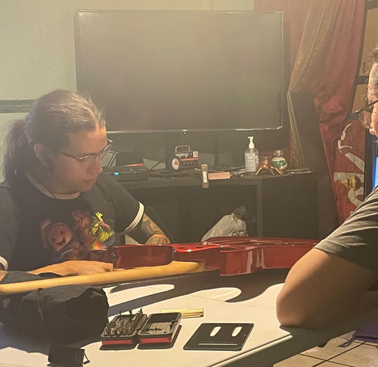
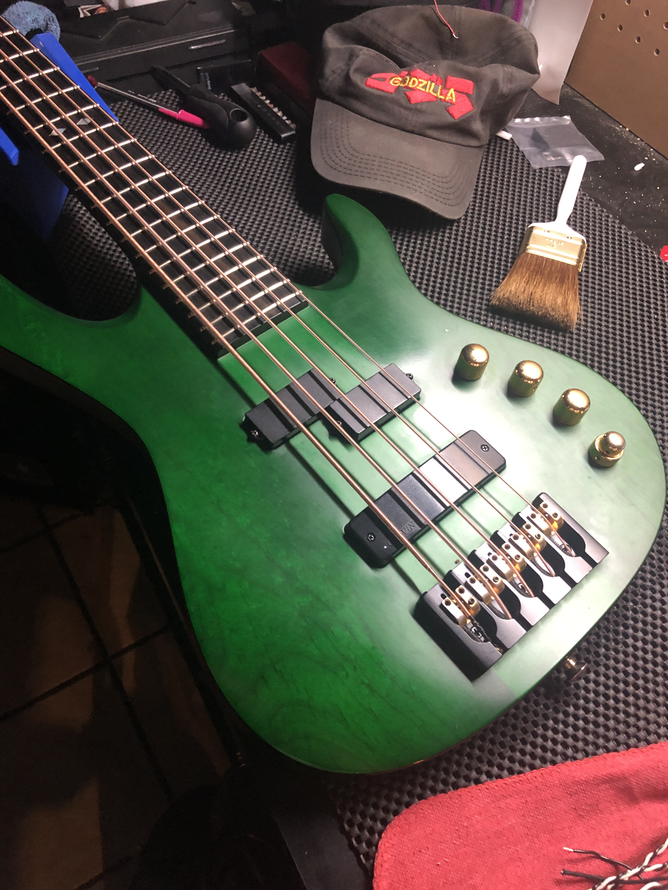

Servicing Los Angeles and Orange County Musicians. Check out our current services. For custom inqueries, give us a call.
Services

Omar Morales, owner of Oracle Guitar Repair, graduated from MI in guitar luthier studies with 10+ years of experience repairing guitars, bases and amps. At Oracle guitar Repair, we accept all types of guitars and basses. Ranging from vintage guitars/basses, to heavy played equipment. We will assess and determine your equipments needs with professional grade analysis. We then can provide the highest quality repairs.
Contact me
